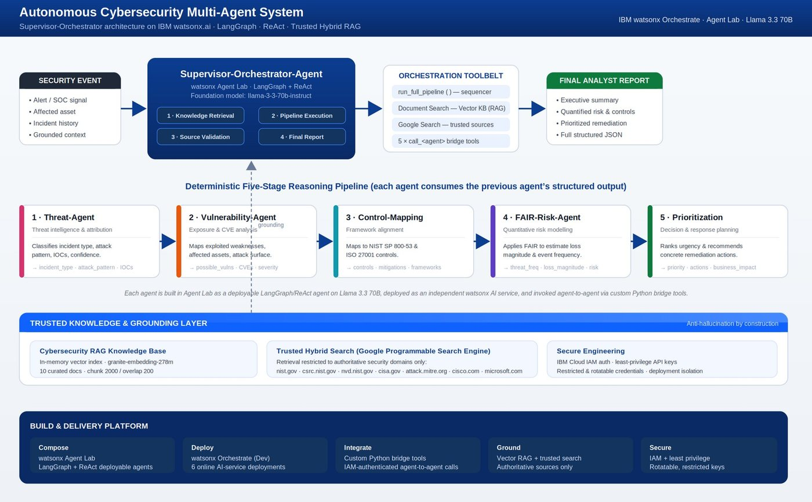
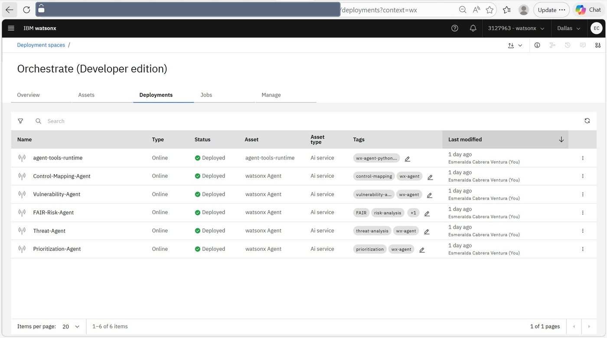
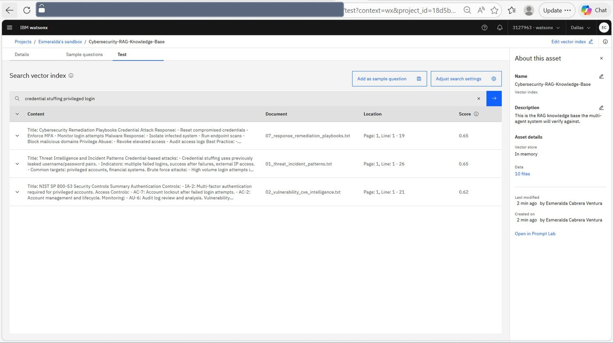
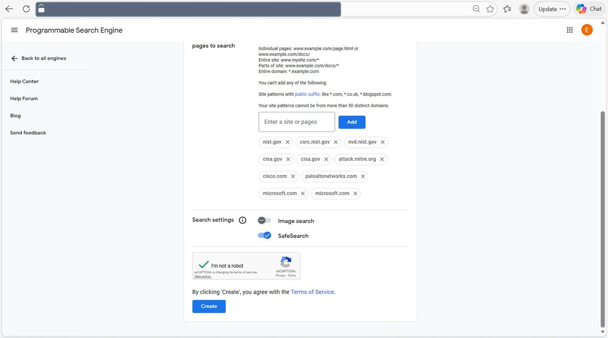
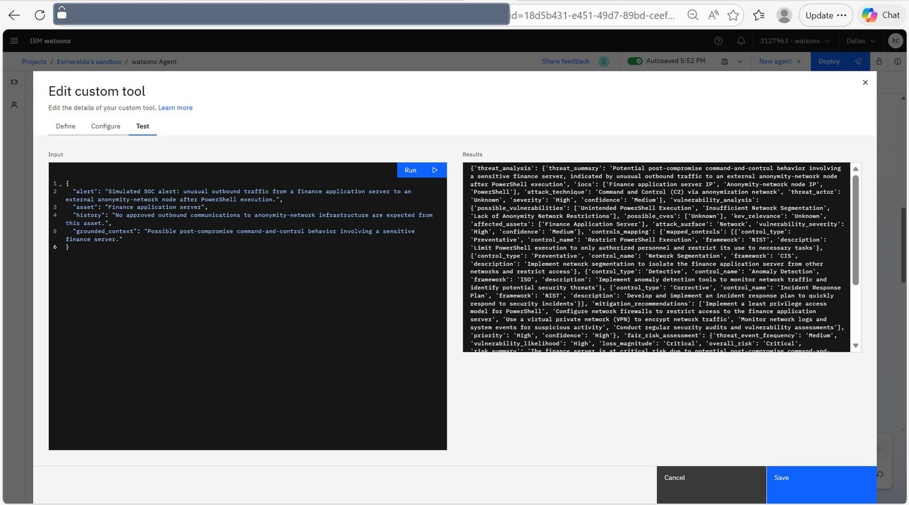
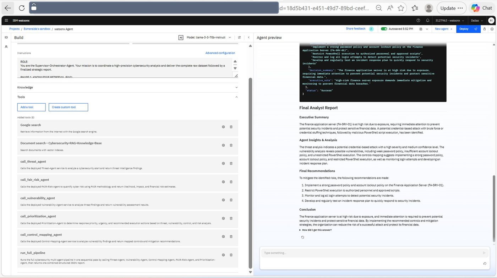

Thesis
Agents as services, not prompts
Why five deployed endpoints beat one large instruction, and what that choice cost.
Security teams face a relentless stream of alerts, and each one ideally demands a multi-disciplinary investigation: understand the threat, identify the exploited weaknesses, map the situation to governance frameworks, quantify the business risk, and decide what to do first. Sustaining that consistently, at speed, with defensible rigour is hard for humans.
It is also hard for a single model. Ask one prompt to do all five disciplines at once and the output degrades in a characteristic way: shallow in every dimension, inconsistent between runs, and prone to inventing the specifics — a control identifier, a CVE, a loss figure — precisely where specificity matters most.
So I decomposed the work. Five specialist agents, each with a single well-defined responsibility and a strict output contract, chained so that every agent reasons over the validated structured output of the one before it. Each was built and deployed as its own online AI service with its own addressable inference endpoint, rather than existing as a section of a long prompt. That distinction is the whole architecture: it is what makes this a genuine multi-agent system rather than a monolith wearing five hats.
The cost of that decision is honest and worth naming: six services to deploy, authenticate, version and keep online, plus the bespoke integration code that lets them call one another. The rest of this document is largely an account of paying that cost properly.
System
Supervisor-orchestrator architecture
One intelligent orchestrator above a deterministic pipeline and a trusted knowledge layer, exposing the whole system through a single interface.
A single Supervisor-Orchestrator-Agent fronts the system. It is a LangGraph/ReAct agent on Llama 3.3 70B, governed by a phased operating instruction: retrieve grounding knowledge, execute the pipeline, optionally validate against trusted sources, then deliver a complete analyst report. Everything beneath it is either a specialist service or a source of grounded evidence.
| Component | Technology | Responsibility I owned |
|---|---|---|
| Orchestrator | watsonx Agent Lab · LangGraph · ReAct | Phased operating instruction, toolbelt composition, report synthesis, and the boundary between reasoning and fixed execution |
| Specialist agents | Agent Lab · Llama-3-3-70b-instruct | Five agent instructions, each with a single responsibility and a strict JSON output contract |
| Deployment | watsonx Orchestrate (Developer edition) | Six online AI-service deployments, deployment-space organization, naming and topology |
| Vector retrieval | In-memory index · granite-embedding-278m | Corpus curation, chunking and overlap strategy, retrieval depth, and validation of returned passages |
| Trusted web search | Google Programmable Search Engine | The authoritative-domain allow-list, SafeSearch configuration, and binding it into watsonx |
| Integration | Custom Python function tools · IBM Cloud IAM | Five agent-to-agent bridge tools plus the single-pass pipeline tool: authentication, request shaping, response parsing and normalization |
| Runtime | agent-tools-runtime (Python engine) | The deployed execution environment for all custom tool logic |
The orchestrator's toolbelt has eight entries: five agent bridges, the consolidated run_full_pipeline tool, document search against the knowledge base, and trusted web search. Giving it both the individual bridges and the consolidated pipeline was intentional — the pipeline is the normal path, and the individual bridges remain available for targeted re-analysis of a single stage without re-running the whole chain.
Pipeline
Five stages, one contract each
A directed chain in which every agent enriches the structured output of its predecessor.
The five specialists form a fixed sequence. Raw alert data is progressively transformed into a complete, prioritized, standards-aligned risk picture, and each hand-off is a typed JSON document rather than prose. That constraint is what keeps stage four from having to re-interpret stage two's English.
Threat-Agent
Ingests the raw security alert and returns a structured classification of the incident — threat summary, incident type, attack pattern and technique, indicators of compromise, likely actor, severity and a confidence value.
Vulnerability-Agent
Reasons about which weaknesses, exposed assets and attack surfaces could have enabled the observed activity, and how severe that exposure is.
Control-Mapping-Agent
Maps each finding onto recognised security controls and frameworks — NIST SP 800-53, ISO 27001 and CIS — and distinguishes preventative, detective and corrective controls, returning mitigation and detection recommendations with a remediation priority.
FAIR-Risk-Agent
Applies the FAIR methodology to convert the qualitative chain into quantitative estimates: threat event frequency, loss magnitude, financial risk estimate, risk category and an overall risk level, each with a stated justification.
Prioritization-Agent
Converts quantified risk into an executive decision layer — response priority, urgency, business impact, execution scope and a ranked set of concrete recommended actions.
Stage three is where the system stops being a summarizer. Mapping an observed behaviour onto a named control in a named framework is a claim that can be checked by someone who knows the framework, and that is exactly the property that makes the output usable in a governance conversation rather than only in a chat window. It is also the stage that most needs grounding, which is the subject of the next section.
Grounding
Trusted hybrid retrieval
Making fabricated or low-quality information structurally difficult to introduce, rather than merely discouraged.
Instructing a model not to hallucinate is not a control. The grounding layer is built so that the sources available to the system are constrained by configuration, in two complementary ways.
The vector knowledge base
A curated corpus of cybersecurity reference material — CVE intelligence, threat-incident patterns, NIST 800-53 controls, the FAIR framework and response playbooks — embedded into an in-memory vector index using granite-embedding-278m-multilingual. Ten files, 2,000-character chunks with 200-character overlap, retrieval depth of three.
Those parameters were chosen for the shape of the material rather than accepted as defaults. Control documentation is dense and self-referential; chunks that are too small sever a control from its description, and no overlap loses the ones that straddle a boundary. Retrieval was validated directly against the index — a semantic query for credential stuffing against a privileged login returns remediation playbooks, threat-incident patterns and the relevant NIST authentication controls, ranked with similarity scores.
The trusted web search
Beyond the internal store, the orchestrator can search the live web — but only across an allow-list of authoritative security domains, enforced through a Google Programmable Search Engine. The permitted set includes nist.gov, csrc.nist.gov, nvd.nist.gov, cisa.gov, attack.mitre.org and a small number of vendor security sources.
This is the difference between a system that is told to prefer good sources and a system that cannot reach a bad one. A low-quality or adversarial page is not outranked; it is not in the index the search engine is permitted to return from. That property survives model changes, prompt drift and future maintainers who have not read the instruction.
Integration
The connective tissue
Five bespoke bridge tools, and the authentication flow underneath every inter-agent call.
Deploying five agents does not make them a system. What makes them a system is the code that lets one call another, and that code is where most of the engineering time actually went.
Each deployed agent exposes a secured REST inference endpoint with a defined input contract — a messages array. The orchestrator reaches each one through a bespoke Python function tool implementing the same five-step pattern.
- Authenticate — exchange an IBM Cloud API key for a short-lived IAM bearer token against the identity endpoint
- Shape — build the payload to match that deployment's exact expected input contract
- Call — post to the agent's inference endpoint with the bearer token and correct content type
- Parse — extract the model's message content and recover the JSON object from it
- Normalize — coerce the result into the schema the next stage expects, with defensive fallbacks when a field is missing or the response is not the expected structure
The normalization step is the one that is easy to skip and expensive to skip. A language model asked for strict JSON will comply almost always — and "almost always" across five chained stages compounds into a materially unreliable pipeline. Wrapping each response in a parse-and-coerce layer with explicit fallbacks is what converts five probabilistic services into one dependable chain. Every bridge tool was independently tested against a simulated SOC alert and confirmed to return well-typed output before being wired into the chain.
Why tokens rather than keys at the call site
Calling a deployed watsonx service requires an IAM bearer token exchanged from an API key. Doing that exchange inside the tool, per invocation, keeps a long-lived credential out of the request path and means the thing actually travelling with each call is short-lived. Token acquisition is factored into a reusable helper shared by all the bridges rather than reimplemented five times — the same reason any repeated authentication logic gets factored out: so it can be fixed once.
Determinism
Trading autonomy for reliability
The single-pass pipeline tool, and the case for bounding an agent that could have been left free.
With five bridge tools available, the obvious design is to let the orchestrator decide when to call each one — that is what ReAct is for. It is also the design that produces a system whose behaviour you cannot predict, whose cost varies per run, and whose failures are difficult to reproduce.
So the five bridge calls were consolidated into a single run_full_pipeline tool. It executes the agents in a fixed sequence within one pass, threading each stage's output into the next, and returns one combined structured report with defensive fallbacks at every join. The orchestrator calls it once.
The orchestrator keeps its ReAct reasoning for the work that genuinely benefits from it: deciding what to retrieve from the knowledge base, judging whether a claim warrants validation against trusted sources, and synthesizing the final narrative. What it does not get to improvise is the analytical chain itself.
The result was confirmed across repeated end-to-end runs at three levels — each individual bridge tool, the consolidated pipeline, and the live orchestrator — each producing consistent, schema-compliant output from the same simulated alert.
Limits I will state plainly
Validation here was hands-on testing against simulated SOC alerts, not a measured evaluation. It establishes that the system produces consistent, schema-compliant, sensible output on the cases tried. It does not establish accuracy rates against a labelled corpus, behaviour under adversarial or malformed alerts, latency under concurrency, or output quality across the full diversity of real incident types. An automated evaluation harness with confidence scoring is the first thing I would build before this system informed a real decision, and I would rather say so than let repeated successful runs imply more than they earned.
Security
Secure engineering as a design input
A system that operates in the security domain and was always intended to be published.
| Control | Implementation |
|---|---|
| Trusted-source grounding | Web retrieval constrained by the Programmable Search Engine to an allow-list of authoritative domains, making low-quality or adversarial sources structurally difficult to introduce rather than merely discouraged |
| Least-privilege credentials | The Google API key is explicitly restricted to the Custom Search API alone; it can call nothing else in the project even if it leaks |
| Short-lived authentication | IBM Cloud access uses IAM bearer tokens exchanged per call from rotatable API keys, rather than long-lived credentials travelling with each request |
| Isolation by project | A dedicated Google Cloud project provisioned solely for this integration, keeping its blast radius separate from anything else |
| Service isolation | Each agent runs as an independently addressable AI-service deployment, limiting blast radius and enabling independent scaling |
| Safe-to-publish redaction | Every API key, bearer token and access token permanently redacted, along with all public and private inference endpoints, deployment and resource identifiers, and browser address bars. Underlying credentials are additionally rotated |
The redaction discipline is worth one further note. Inference endpoints and deployment identifiers are not secrets in the way a key is, but published together they describe reachable infrastructure precisely enough to be useful to someone probing it. Treating them as confidential and rotating the credentials anyway is the cheaper side of that trade — and showing the redaction explicitly throughout the documentation is itself the evidence that the practice was applied.
Build
The running system
Captured from the live build. All endpoints, identifiers, keys and tokens are permanently redacted.






Results
What the system actually produces
Not a chatbot. A decision-support system with a defined output.
Given a single raw alert, the orchestrator returns a Final Analyst Report containing an executive summary, agent-by-agent insights, quantified risk and a prioritized set of concrete remediation actions — with the complete structured pipeline data available alongside the narrative, so the reasoning can be inspected rather than taken on trust.
- A deterministic five-stage pipeline chaining specialist agents with strict, well-typed hand-offs
- Six independently deployed online AI services orchestrated through purpose-built tools
- Trusted hybrid grounding combining vector RAG with allow-listed authoritative web search
- Consistent, schema-compliant output validated at the agent, pipeline and orchestrator levels
- A single supervising agent fronting the whole system and delivering a professional analyst report
The wider point is architectural. The patterns here — agent specialization, structured hand-offs, tool use, retrieval grounding, orchestration — are the ones that increasingly define production AI, applied to a domain where being wrong is expensive and being unverifiable is disqualifying.
Status
Honest build state
Shipped, prototype-level, or deferred — and where this goes next.
| Capability | State | Note |
|---|---|---|
| Five specialist agents | Shipped | Built, instructed with strict output contracts, deployed as independent online AI services |
| Deterministic pipeline | Shipped | Fixed-sequence single-pass execution with defensive fallbacks at every join |
| Agent-to-agent integration | Shipped | Five bridge tools with IAM authentication, response parsing and normalization, each independently tested |
| Vector knowledge base | Shipped | Ten curated files, tuned chunking and overlap, retrieval validated by direct query |
| Trusted web grounding | Shipped | Programmable Search Engine allow-list, least-privilege API key scoped to Custom Search only |
| Supervising orchestrator | Shipped | Phased operating instruction, eight-tool belt, final report synthesis |
| Optional source validation | Prototype | Functional, but invoked at the orchestrator's discretion rather than on a defined rule |
| Output robustness | Prototype | Normalization and fallbacks hold across every run tried; not yet exercised against adversarial or malformed alerts |
| Automated evaluation harness | Deferred | Highest-priority next investment — accuracy against a labelled corpus, with confidence scoring |
| SIEM / SOAR integration | Deferred | Pipeline currently runs on demand rather than triggering automatically on incoming alerts |
| Human-in-the-loop surface | Deferred | Required before any action-capable step; the approval gate is the feature, not the connector |
| Stage parallelization | Deferred | Independent stages could run concurrently for lower latency; the chain is strictly sequential today |
Where this goes next
The natural trajectory is from an advisory analyst that recommends actions into a guarded, action-capable platform that helps carry them out — scoped connectors into identity providers, firewalls, endpoint protection and cloud security tooling, so an approved recommendation can actually be applied rather than only described.
Every one of those actions stays behind a mandatory human approval gate, with full audit logging and rollback. That is not a caveat appended to an ambition; it is the design constraint that makes the ambition responsible. An analyst who cannot refuse, inspect and reverse a change is not in the loop, whatever the diagram says. Capturing those approvals, edits and rejections as feedback is also what would let the system measurably improve its scoring and recommendations over time.